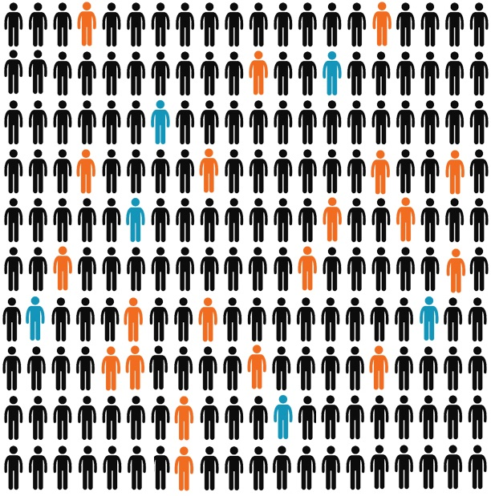
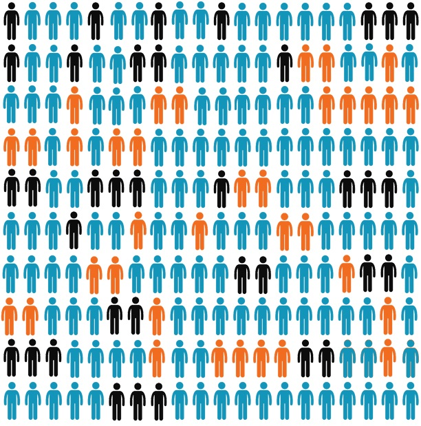

Now, we would like to share some very important information with you. This information is especially important for anyone who is thinking about leaving to go to Europe. All of the information that we will tell you is true. If you want, we can tell you the source for each piece of information. We are not telling you what to do. We are not from the government. For us, it is important that you know these important facts so that you can make good decisions.
Most Nigerians who leave to go to Europe travel across the Sahara desert and the Mediterranean Sea. The passage usually lasts at least several weeks but sometimes lasts many months, and there is a risk of being injured or dying along the route. Most people think that it would be different for them and that they would be able to make it, but that is not the case. Many people die, including people like you, [men/women] of your age. We don’t know exactly how many people die. One reason is that the bodies of those who drown in the sea or are left behind in the desert are often not found.
But we know from interviews that two out of every three people who made the journey said that they had seen someone die along the route. Most people said it happened in Libya. Those who have done the journey say that more people die in the desert than the sea. And one in every five people had seen so many people die that they could not even give a number, but just said “many.”
Migrants can die for many reasons when they travel across the desert and the sea. Many die from sickness and accidents. Others are murdered, drown, starve, or die from not getting enough to drink.
Those who make the journey have to wait in connection houses at stops along the way. Many of those who have made the journey say that they were not allowed to leave, and say they were forced to make additional payments along the route that they did not expect. Some people are forced to sell sex, sold into slavery, or killed, especially if they cannot pay extra money along the route or if they get sick. Right now, many, many thousands of Nigerians are stuck in Libya,because they have not been able to cross the Mediterranean Sea.
Even if you get on a boat, the connection men will usually only give enough gas to get to international waters. In the past, most who were rescued from boats were brought to Italy, but now most are immediately returned to Libya. That is why there are so many Nigerians in Libya now.
We estimate that about 200,000 Nigerians attempted to reach Europe along this route in 2018. About 20,000 Nigerians complete the journey to Europe every year and apply for asylum. But most Nigerians that make it to Europe are not allowed to stay and are to be sent back to Nigeria.
Each case is decided individually, and you have to prove that you were persecuted in Nigeria, for example because of your race, religion, or political opinion. Between 2011 and 2017, only one out of every four Nigerian applicants was granted asylum or otherwise allowed to stay.
Now, we want you to see a picture that shows how many Nigerians that follow land actually make it to Europe. Here, each figure represents 1,000 women and men who try to follow land to Europe. Remember that we estimate that about 200,000 Nigerians attempted to follow land in 2018, so there are two-hundred of these human figures.
We have colored figures orange and blue to represent people that reach Europe and file an application to stay. But only the applications of the people represented by the blue shapes are accepted. Most Nigerians are rejected and are required to return to Nigeria. As you can see, the vast majority of people never reach Europe. These people are represented by the black shapes. They might die, get stuck in Niger or Libya, or return to Nigeria.

Now, you might think that this would not happen to you. You might think that you personally would not be hurt along the route and that you would be able to stay in Europe, even if other Nigerians are at risk. But we know from a survey that we conducted in 2018 that most people think like this. In fact almost everyone thinks these bad things would not happen to them. This means that most of the people who are hurt along the journey or who get stuck or have to return to Nigeria thought that this would never happen to them.Four in five respondents believe it is likely that they would be able to reach Europe if they wanted to, and about the same share believe that their asylum application would be accepted.
Here is another picture. It uses the same layout and colors as the previous one, but now it shows what people from around here think will happen. The orange and blue shapes show the share that think they would be able to go all the way to Europe, and the blue shapes represent the share that think their asylum application would be accepted. You can see, it looks very different from the previous one that showed the real numbers.

We just shared a lot of information with you. Remember, we are not trying to tell you what to do. Every person can make their own choices. But we want to make sure you have what we honestly think is the best available information about what happens when people try to travel by routes to Europe. So let’s go over some of the key points again.
Adhikari, Samir, and Helen Dempster. 2019. “Using regularized labor migration to promote Nigeria’s development aims.” http://blogs.worldbank.org/developmenttalk/using-regularized-labor-migration-promote-nigerias-development-aims.
Hanson, Gordon, and Craig McIntosh. 2016. “Is the Mediterranean the New Rio Grande? US and Eu Immigration Pressures in the Long Run.” Journal of Economic Perspectives 30 (4): 57–82.
UNDP. 2019. “Scaling Fences: Voices of Irregular African Migrants to Europe.” https://www.undp.org/content/dam/rba/docs/Reports/UNDP-Scaling-Fences-EN-2019.pdf.